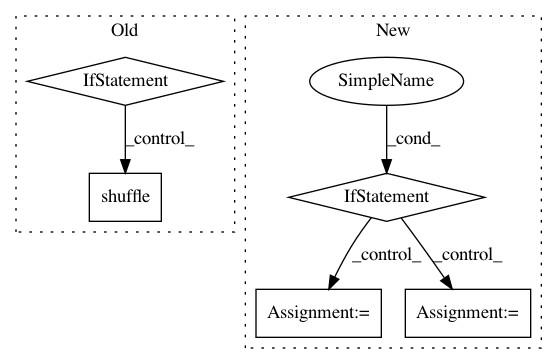

2a1a6851344172e0134f3c5f4f5c1021975f2812,torchnlp/samplers/bucket_batch_sampler.py,BucketBatchSampler,__iter__,#BucketBatchSampler#,37
Before Change
batches = list(super().__iter__())
if self.last_batch_first:
last_batch = batches.pop()
if self.shuffle:
random.shuffle(batches)
if self.last_batch_first:
batches.insert(0, last_batch)
return iter(batches)
After Change
yield batch
if not self.biggest_batches_first:
return get_batches()
else:
batches = list(get_batches())
indices = heapq.nlargest(
5,
range(len(batches)),
key=lambda i: len(pickle.dumps([self.data[j] for j in batches[i]])))
front = [batches[i] for i in indices]
for i in sorted(indices, reverse=True):
batches.pop(i)
batches[0:0] = front
return iter(batches)
In pattern: SUPERPATTERN
Frequency: 3
Non-data size: 5
Instances
Project Name: PetrochukM/PyTorch-NLP
Commit Name: 2a1a6851344172e0134f3c5f4f5c1021975f2812
Time: 2018-03-11
Author: petrochukm@gmail.com
File Name: torchnlp/samplers/bucket_batch_sampler.py
Class Name: BucketBatchSampler
Method Name: __iter__
Project Name: asyml/texar
Commit Name: 293f90f5460e8f7ba06965d5c1b1304925b5a142
Time: 2017-12-02
Author: zichaoy@cs.cmu.edu
File Name: examples/tsf/utils.py
Class Name:
Method Name: get_batches
Project Name: keras-team/keras
Commit Name: 403b4fc7a25da5d957b24f1c269103ef6e290bd6
Time: 2016-01-26
Author: udi@benreuven.com
File Name: keras/preprocessing/image.py
Class Name: ImageDataGenerator
Method Name: flow